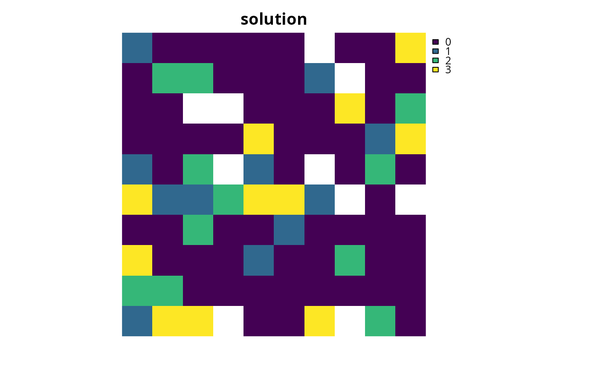

Add maximum feature representation objective
Source:R/add_max_features_objective.R
add_max_features_objective.RdSet the objective of a conservation planning problem to
fulfill as many targets as possible while ensuring that the cost of the
solution does not exceed a budget.
add_max_features_objective(x, budget)
Arguments
| x |
|
|---|---|
| budget |
|
Value
ConservationProblem-class object with the objective
added to it.
Details
A problem objective is used to specify the overall goal of the conservation planning problem. Please note that all conservation planning problems formulated in the prioritizr package require the addition of objectives---failing to do so will return an error message when attempting to solve problem.
The maximum feature representation objective is an enhanced version of the
maximum coverage objective add_max_cover_objective because
targets can be used to ensure that a certain amount of each feature is
required in order for them to be adequately represented (similar to the
minimum set objective (see add_min_set_objective). This
objective finds the set of planning units that meets representation targets
for as many features as possible while staying within a fixed budget
(inspired by Cabeza and Moilanen 2001). Additionally, weights can be used
add_feature_weights). If multiple solutions can meet the same
number of weighted targets while staying within budget, the cheapest
solution is returned.
The maximum feature objective for the reserve design problem can be expressed mathematically for a set of planning units (\(I\) indexed by \(i\)) and a set of features (\(J\) indexed by \(j\)) as:
$$\mathit{Maximize} \space \sum_{i = 1}^{I} -s \space c_i \space x_i + \sum_{j = 1}^{J} y_j w_j \\ \mathit{subject \space to} \\ \sum_{i = 1}^{I} x_i r_{ij} >= y_j t_j \forall j \in J \\ \sum_{i = 1}^{I} x_i c_i \leq B$$
Here, \(x_i\) is the decisions variable (e.g.
specifying whether planning unit \(i\) has been selected (1) or not
(0)), \(r_{ij}\) is the amount of feature \(j\) in planning
unit \(i\), \(t_j\) is the representation target for feature
\(j\), \(y_j\) indicates if the solution has meet
the target \(t_j\) for feature \(j\), and \(w_j\) is the
weight for feature \(j\) (defaults to 1 for all features; see
add_feature_weights to specify weights). Additionally,
\(B\) is the budget allocated for the solution, \(c_i\) is the
cost of planning unit \(i\), and \(s\) is a scaling factor used
to shrink the costs so that the problem will return a cheapest solution
when there are multiple solutions that represent the same amount of all
features within the budget.
References
Cabeza M and Moilanen A (2001) Design of reserve networks and the persistence of biodiversity. Trends in Ecology \& Evolution, 16: 242--248.
See also
Examples
# load data data(sim_pu_raster, sim_pu_zones_stack, sim_features, sim_features_zones) # create problem with maximum features objective p1 <- problem(sim_pu_raster, sim_features) %>% add_max_features_objective(1800) %>% add_relative_targets(0.1) %>% add_binary_decisions()#> Optimize a model with 6 rows, 95 columns and 545 nonzeros #> Variable types: 0 continuous, 95 integer (95 binary) #> Coefficient statistics: #> Matrix range [2e-01, 2e+02] #> Objective range [1e-04, 1e+00] #> Bounds range [1e+00, 1e+00] #> RHS range [2e+03, 2e+03] #> Found heuristic solution: objective -0.0000000 #> Presolve time: 0.00s #> Presolved: 6 rows, 95 columns, 545 nonzeros #> Variable types: 0 continuous, 95 integer (95 binary) #> Presolved: 6 rows, 95 columns, 545 nonzeros #> #> #> Root relaxation: objective 4.701027e+00, 23 iterations, 0.00 seconds #> #> Nodes | Current Node | Objective Bounds | Work #> Expl Unexpl | Obj Depth IntInf | Incumbent BestBd Gap | It/Node Time #> #> 0 0 4.70103 0 6 -0.00000 4.70103 - - 0s #> 0 0 4.69735 0 7 -0.00000 4.69735 - - 0s #> 0 0 4.65824 0 8 -0.00000 4.65824 - - 0s #> 0 0 4.65079 0 9 -0.00000 4.65079 - - 0s #> 0 0 4.64587 0 10 -0.00000 4.64587 - - 0s #> 0 0 4.63767 0 10 -0.00000 4.63767 - - 0s #> 0 0 4.63255 0 10 -0.00000 4.63255 - - 0s #> 0 0 4.63059 0 12 -0.00000 4.63059 - - 0s #> 0 0 4.63010 0 13 -0.00000 4.63010 - - 0s #> 0 0 4.62886 0 14 -0.00000 4.62886 - - 0s #> 0 0 4.62776 0 14 -0.00000 4.62776 - - 0s #> 0 0 4.62759 0 15 -0.00000 4.62759 - - 0s #> 0 0 4.62714 0 16 -0.00000 4.62714 - - 0s #> 0 2 4.62165 0 16 -0.00000 4.62165 - - 0s #> H 3 3 0.9990541 3.81348 282% 15.0 0s #> H 13 4 1.9990388 3.60705 80.4% 11.6 0s #> #> Cutting planes: #> Cover: 1 #> MIR: 6 #> StrongCG: 3 #> #> Explored 46 nodes (328 simplex iterations) in 0.04 seconds #> Thread count was 1 (of 4 available processors) #> #> Solution count 3: 1.99904 0.999054 -0 #> #> Optimal solution found (tolerance 1.00e-01) #> Best objective 1.999038833267e+00, best bound 1.999367010252e+00, gap 0.0164%# create multi-zone problem with maximum features objective, # with 10 % representation targets for each feature, and set # a budget such that the total maximum expenditure in all zones # cannot exceed 3000 p2 <- problem(sim_pu_zones_stack, sim_features_zones) %>% add_max_features_objective(3000) %>% add_relative_targets(matrix(0.1, ncol = 3, nrow = 5)) %>% add_binary_decisions()#> Optimize a model with 106 rows, 285 columns and 1905 nonzeros #> Variable types: 0 continuous, 285 integer (285 binary) #> Coefficient statistics: #> Matrix range [2e-01, 2e+02] #> Objective range [3e-05, 1e+00] #> Bounds range [1e+00, 1e+00] #> RHS range [1e+00, 3e+03] #> Found heuristic solution: objective -0.0000000 #> Presolve time: 0.01s #> Presolved: 106 rows, 285 columns, 1905 nonzeros #> Variable types: 0 continuous, 285 integer (285 binary) #> Presolved: 106 rows, 285 columns, 1905 nonzeros #> #> #> Root relaxation: objective 7.938175e+00, 243 iterations, 0.00 seconds #> #> Nodes | Current Node | Objective Bounds | Work #> Expl Unexpl | Obj Depth IntInf | Incumbent BestBd Gap | It/Node Time #> #> 0 0 7.93818 0 11 -0.00000 7.93818 - - 0s #> H 0 0 3.9996549 7.93818 98.5% - 0s #> H 0 0 4.9996180 7.93818 58.8% - 0s #> 0 0 7.56188 0 18 4.99962 7.56188 51.2% - 0s #> 0 0 7.56101 0 19 4.99962 7.56101 51.2% - 0s #> 0 0 7.27065 0 11 4.99962 7.27065 45.4% - 0s #> 0 0 7.26884 0 12 4.99962 7.26884 45.4% - 0s #> 0 0 7.26873 0 13 4.99962 7.26873 45.4% - 0s #> 0 0 7.26293 0 14 4.99962 7.26293 45.3% - 0s #> H 0 0 4.9996480 7.26293 45.3% - 0s #> 0 0 7.26286 0 14 4.99965 7.26286 45.3% - 0s #> 0 0 7.25824 0 18 4.99965 7.25824 45.2% - 0s #> 0 0 7.25824 0 18 4.99965 7.25824 45.2% - 0s #> H 0 0 4.9996494 7.25824 45.2% - 0s #> 0 2 7.25729 0 18 4.99965 7.25729 45.2% - 0s #> #> Cutting planes: #> Gomory: 1 #> Cover: 6 #> MIR: 6 #> StrongCG: 2 #> GUB cover: 1 #> Inf proof: 2 #> #> Explored 63 nodes (1030 simplex iterations) in 0.09 seconds #> Thread count was 1 (of 4 available processors) #> #> Solution count 5: 4.99965 4.99965 4.99962 ... -0 #> #> Optimal solution found (tolerance 1.00e-01) #> Best objective 4.999649366173e+00, best bound 5.273354104240e+00, gap 5.4745%# create multi-zone problem with maximum features objective, # with 10 % representation targets for each feature, and set # separate budgets for each management zone p3 <- problem(sim_pu_zones_stack, sim_features_zones) %>% add_max_features_objective(c(3000, 3000, 3000)) %>% add_relative_targets(matrix(0.1, ncol = 3, nrow = 5)) %>% add_binary_decisions()#> Optimize a model with 108 rows, 285 columns and 1905 nonzeros #> Variable types: 0 continuous, 285 integer (285 binary) #> Coefficient statistics: #> Matrix range [2e-01, 2e+02] #> Objective range [3e-05, 1e+00] #> Bounds range [1e+00, 1e+00] #> RHS range [1e+00, 3e+03] #> Found heuristic solution: objective -0.0000000 #> Presolve time: 0.00s #> Presolved: 108 rows, 285 columns, 1905 nonzeros #> Variable types: 0 continuous, 285 integer (285 binary) #> Presolved: 108 rows, 285 columns, 1905 nonzeros #> #> #> Root relaxation: objective 1.499889e+01, 44 iterations, 0.00 seconds #> #> Nodes | Current Node | Objective Bounds | Work #> Expl Unexpl | Obj Depth IntInf | Incumbent BestBd Gap | It/Node Time #> #> 0 0 14.99889 0 6 -0.00000 14.99889 - - 0s #> H 0 0 14.9989002 14.99890 0.00% - 0s #> #> Explored 1 nodes (44 simplex iterations) in 0.01 seconds #> Thread count was 1 (of 4 available processors) #> #> Solution count 2: 14.9989 -0 #> #> Optimal solution found (tolerance 1.00e-01) #> Best objective 1.499890022234e+01, best bound 1.499890022234e+01, gap 0.0000%